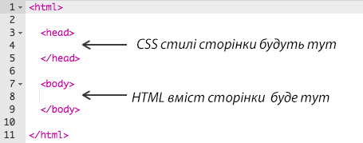
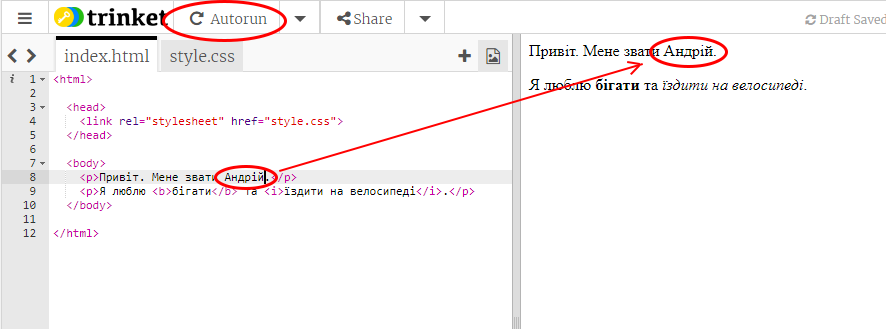
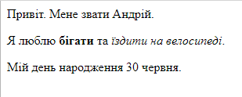
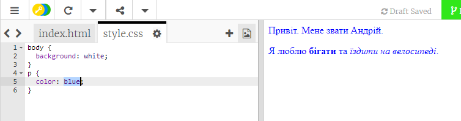
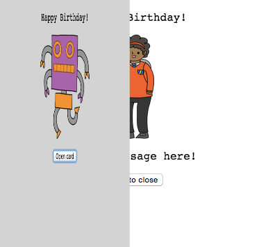
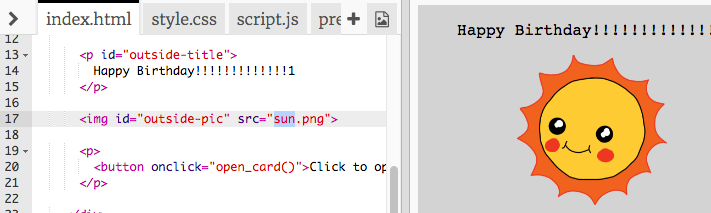

В ході цього проекту ви ознайомитесь з HTML та CSS, практикуючись у створенні власної вітальної листівки.
Крок 1: Що таке HTML?
HTML розшифровується як HyperText Markup Language, що в перекладі означає "Мова розмітки гіпертекстових документів". Вона використовується для створення веб-сторінок. Розглянемо приклад!
Код у лівій частині чернетки — це HTML. У правій частині чернетки розміщена веб-сторінка, створена HTML-кодом.
HTML використовує теги для створення веб-сторінок. Бачите цей HTML у 8-му рядку свого коду?
<p>Привіт. Мене звати Андрій.</p>
<p> є прикладом тегу і скороченням для paragraph (в перекладі — "абзац"). Ви можете починати абзаци тегом <p>, а закінчувати — тегом </p>.
Бачите якісь інші теги? Один з них можна було помітити в 9-му рядку. Це тег <b>, що означає bold (в перекладі — "жирний"):
<b>бігати</b>
Ось ще кілька:
<html> і </html> позначають початок та кінець HTML-документу;
<head> і </head> — теги, в межах яких застосовуються такі штуки, як CSS (ми розберемося з ними пізніше!);
<body> і </body> — теги, в межах яких розташовується вміст вашого веб-сайту.

screenshot
Внесіть зміни до одного з абзаців тексту в HTML (ліворуч). Клацніть на "Run" (що означає "виконати") і побачите, як зміниться ваша веб-сторінка (праворуч)!

screenshot
Якщо ви зробили помилку і хочете скасувати зміни, клацніть на кнопку меню, а потім — "Reset" (що означає "скинути"). Спробуйте!
screenshot
Збережіть свій проект
Виклик: Додайте ще один абзац
Чи зможете додати 3-й абзац тексту під двома попередніми? Пам'ятайте, що ваш новий абзац має починатися з тегу <p> і закінчуватися тегом </p>.
Ось як повинна виглядати ваша веб-сторінка:

screenshot
А чи можете ви ще й додати жирний та підкреслений текст до свого нового абзацу? Для підкреслення тексту можете скористатись тегами <u> і </u>.
Збережіть свій проект
Крок 2: Що таке CSS?
CSS розшифровується як Cascading Style Sheets, що в перекладі означає "Каскадні таблиці стилів". Це мова, що використовується для оформлення веб-сторінок і надання їм гарного вигляду. Ви можете зв'язати свою веб-сторінку з CSS-файлом у <head> (заголовку) HTML-документу, як показано у прикладі:
screenshot
Завдання для виконання
CSS містить список усіх властивостей для певного тегу. Клацніть на вкладку "style.css", щоб побачити CSS для своєї веб-сторінки.
screenshot
Знайдіть цей код:
p { color: black; }
Цей код CSS має одну властивість для абзаців, а саме — що колір тексту має бути чорний.
Змініть слово "black" (чорний) на "blue" (синій) в CSS. Ви побачите, що колір тексту усіх абзаців зміниться на синій.

screenshot
Збережіть свій проект
Виклик: Додайте більше оформлення
Можете зробити текст абзаців помаранчевим (orange)? Або тло (background) сірим (grey)?
Не переймайтесь, якщо не розумієте всього коду. Ця вітальна листівка виглядає нуднувато, тому зараз ви внесете деякі зміни до її HTML та CSS.
Клацніть на кнопку на передній частині листівки. Ви побачите, як листівка розкриється.

screenshot
Перейдіть до 14-го рядка коду. Як і в попередньому прикладі, тут можна редагувати весь текст у форматі HTML, щоб змінити листівку.
screenshot
Можете знайти HTML для зображення робота? (Підказка: це 17-й рядок!) Змініть слово robot (робот) на sun (сонце) і побачите, що зображення змінилося!

screenshot
Можете скористатись будь-яким зі слів: boy (хлопчик), diamond (діамант), dinosaur (динозавр), flowers (квіти), girl (дівчинка), rainbow (веселка), robot (робот), spaceship (зореліт), sun (сонце), tea (чай) чи trophy (приз).
Також можете відредагувати CSS вітальної листівки. Клацніть на вкладку "style.сss". Вона починається з усіх стилів CSS для outside (зовнішньої сторони) листівки. Змініть background-color (колір тла) на lightgreen (салатовий).
screenshot
Ще можете змінити розмір зображення. Перейдіть до #outside-pic в CSS та змініть width (ширину) та height (висоту) зовнішнього зображення на 200px (px означає pixels — пікселі).
screenshot
Шрифт також можна змінити. Перейдіть до #outside-title і змініть font-family (вид шрифту) на Comic Sans MS, а font-size (розмір шрифту) на 16pt.
screenshot
Ще можете скористатись шрифтами arial, Impact та Tahoma.
Збережіть свій проект
Виклик: Створіть власну листівку
Скористайтесь усім, що дізнались про HTML і CSS, щоб закінчити власну листівку. Це не обов'язково має бути вітальна листівка до дня народження — нагода підійде будь-яка!